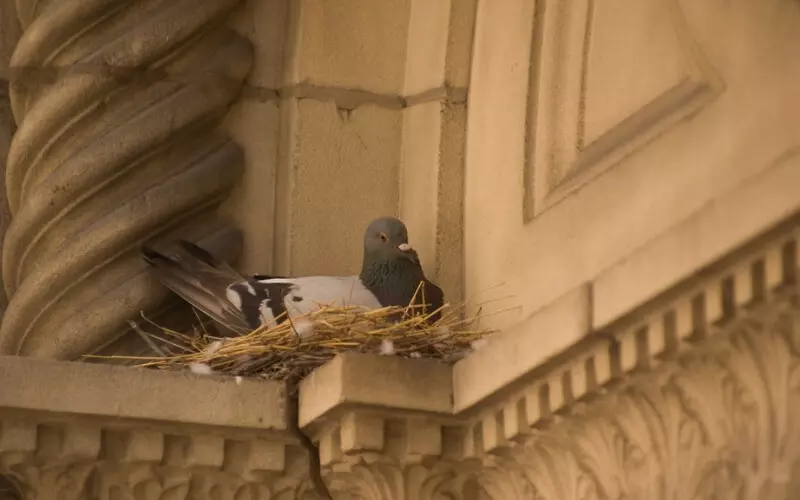

Home
Pigeons were beloved pets and served many useful purposes, the birds were imported all across the globe, including North America. the birds lived peacefully among humans for generations, This began to change during the 1960s. Concerns about diseases associated with pigeon droppings contributed to increasing public fear of the birds. One disease is cryptococcal meningitis, a fungal infection associated with Cryptococcus, which can grow in environments contaminated by bird droppings. this caused a fear of pigeons to spread, some people fought for the birds side, but the news was already out. By the time there was a cure for cryptococcal meningitis, people already had it in their mind that the birds were dirty. The media spread the word that pigeons were dirty, an article came out calling the birds "rats with wings", and a Woody Allen movie popularized the phrase. around the same time, people started using phones. with faster technologies, the pigeon was no longer useful to the people. they were even replaced as a food source, since chickens and turkeys were bigger and much more efficient to harvest. before the end of the century pigeons had no use to the humans and were seen as disese-ridden pest.

A feral pigeon nesting in the side of a buildingAll the domestic pigeons that were kept as pets were released back into the wild. These populations became known as feral pigeons. With some natural instincts having been bred out of them they had nowhere to go but stay in the cities and depend on humans. feral pigeons struggle to build nests that keep their eggs safe, they have no cliffs to live in and must make do with the urban atmosphere. The population of pigeons was abandoned with no regard for their future. The rapid reproduction rate that once made pigeons valuable to humans now contributes to their large urban populations. Today, pigeons are often scolded for occupying public spaces, despite having been brought into human environments through centuries of domestication.
Disbrow, Eliza. “A Brief History of Pigeons (and How We Failed Them).” Her Campus, University of Washington. https://www.hercampus.com/school/washington/a-brief-history-of-pigeons-and-how-we-failed-them/
Kramer, Sally. “The History of Our Perception of Pigeons: From Rock Dove to Winged Rat.” The Science Survey, January 23, 2026. https://thesciencesurvey.com/spotlight/2026/01/23/the-history-of-our-perception-of-pigeons-from-rock-dove-to-winged-rat/.